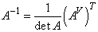
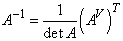

Алгоритм нахождения обратной матрицы:
1. Находим  , проверяем
, проверяем  .
.
, проверяем .2. Находим – все миноры
матрицы  .
.
.3. Определяем .
4. Строим матрицу алгебраических дополнений  и транспонируем: .
и транспонируем: .
и транспонируем: .5. Делим каждый элемент матрицы на :
.
:
.Найти матрицу, обратную для матрицы .
.
.
.
, .
.
..
Проверка:
.